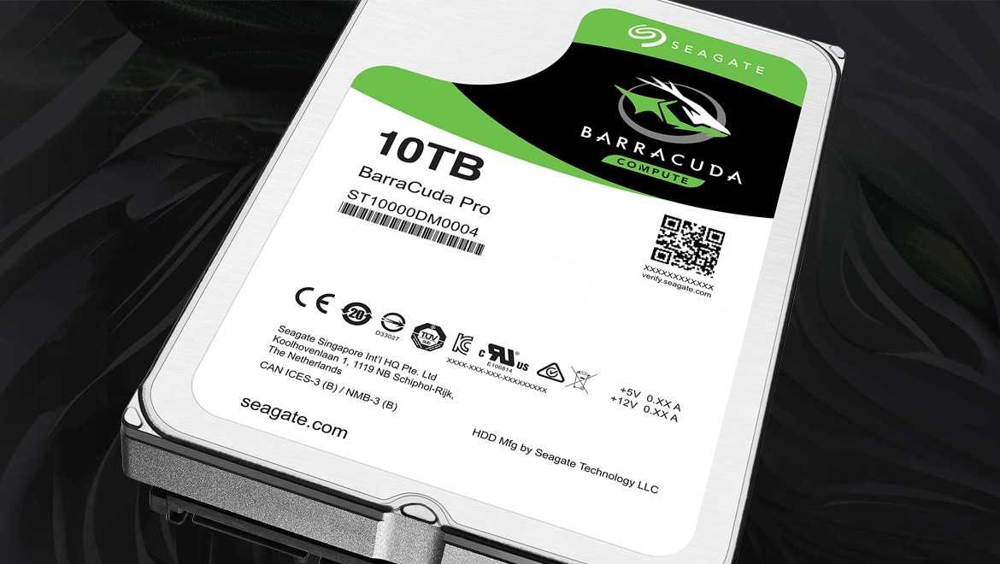

Memorijska Hijerarhija
Svakodnevno pisanje i brisanje podataka, svakodnevno downloadiranje torrenta na hard disk, nošenje prezentacija na USB-u, instaliravanje programa na računalu, sviranje muzike... svi ti podatci su na našim stvarima za pohranu (HDD, SSD, NVMe , USB itd.). Kako pohrana uopce funkcionira i koji su nam nacini za pohranit podatke, objasnit cemo ovdje.
Mogu držati više informacija nego lokalna knjižnica, velika pouzdanost i jeftina cijena samo su neki od aduta koji HDD nose sa sobom i nositi će u bliskoj budućnosti. Nova tehnologija ih i dalje nemože u potpunosti „istrijebiti“ sa tržišta, jer su nam i dalje potrebni sa svojim radom. No, na kojem principu rade? Disk se sastoji od pokretnih dijelova. Nekoliko magnetnih diskova, a iznad svakog se nalazi snimajuća glava. Sve što spremimo je kodirano na disku kao magnetni uzorak u malim grupama (0 i 1, ovisno o smjeru). Podatci se pišu kroz elektromagnet i bitovi se pretvaraju u magnetne kodove i tako se spremaju. Mana kod toga je što svakim pokretom, smanjujemo vijek trajanja diska. Cijene od 1000kn za 4TB disk su i više nego odlične, naspram onih kada usporedimo cijene sa SSD-om ili cijene HDD-a unazad 5-10 godina. Vrhunac tehnologije dosegnut je u 2016. Godini kada je predstavljen prvi hard disk od 10TB. Većeg kapaciteta nema, a cijena mu iznosi oko 2500kn-3000kn, ovisno o modelu i upotrebi, cache memoriji i garanciji.
